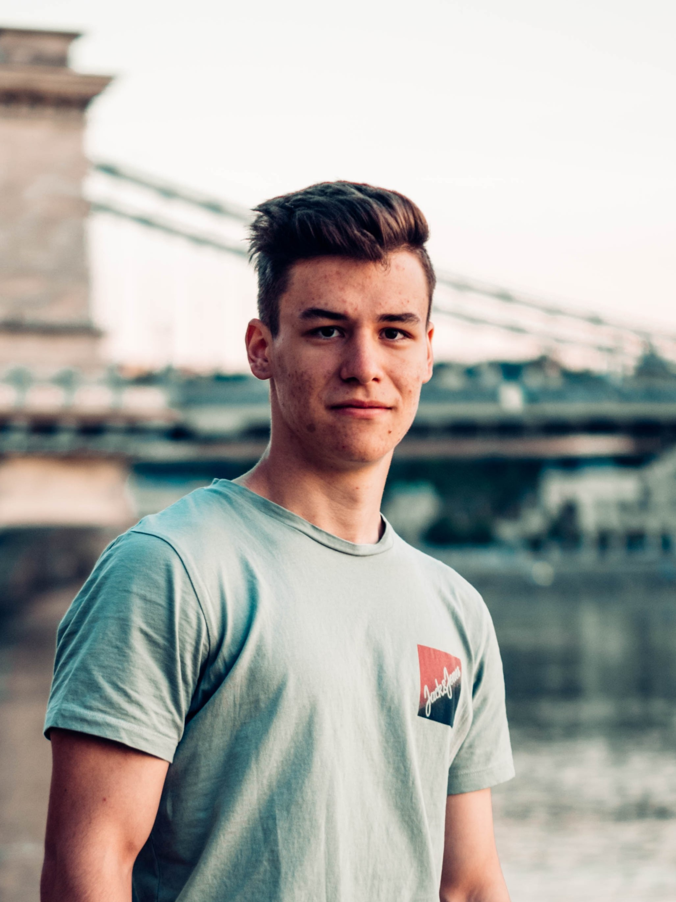

Filkor Egon
Több mint 5 éve fotózok többnyire szabadtéren sport és utazás témában. Videófilmeket is készítek hasonló tematikákban, emellett sporteseményeket rögzítek és közvetítek. Ezek elkészítéséhez egy MILC vázat és 3 objektívet használok. Az általam megörökített témák egybevágnak az érdeklődési köreimmel, mivel több mint egy évtizede futballozom, tanulmányaim következtében pedig a motorsport technikai oldalával foglalkozom.